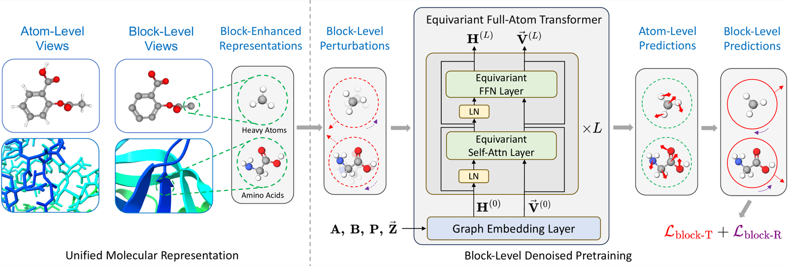
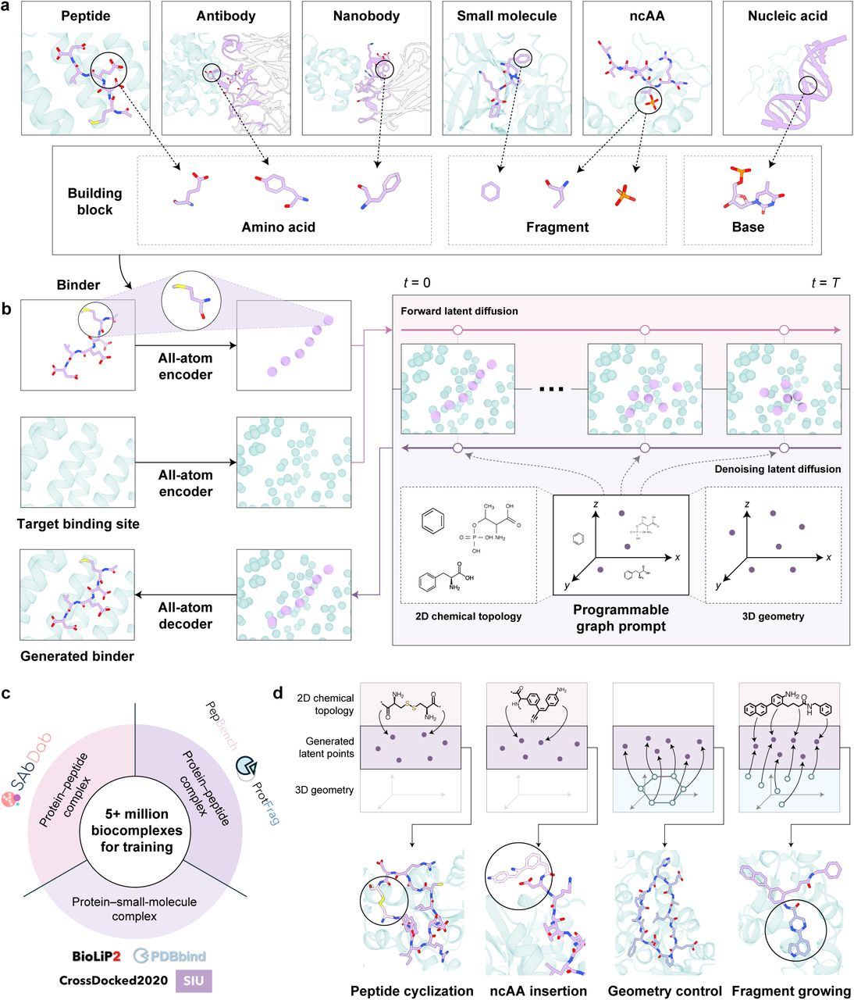
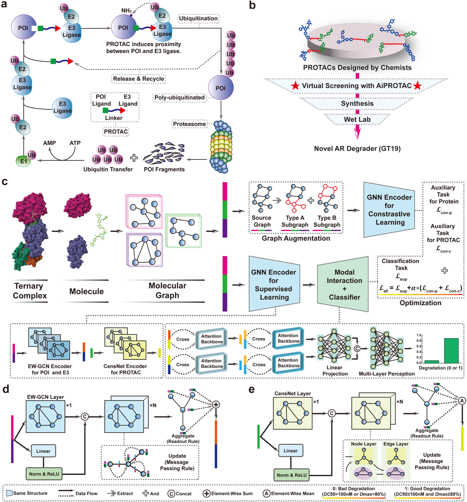
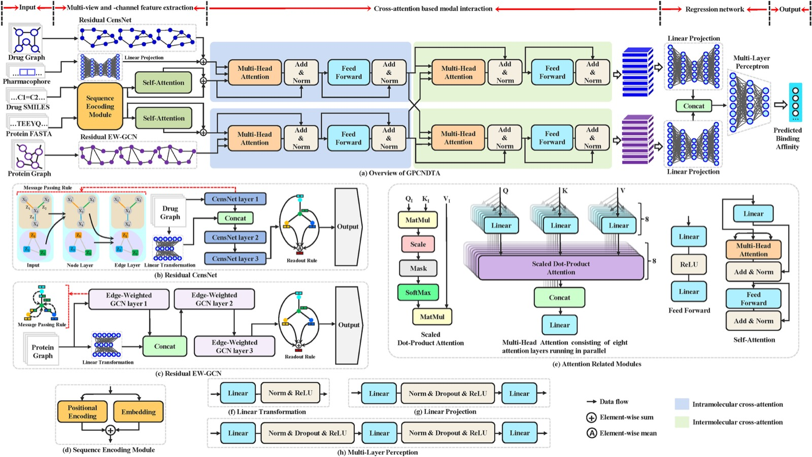

Nature Communications 2026
I am a postdoctoral researcher at Tsinghua University, focusing on AI for Science.
My research interests include graph neural networks and generative models, with a focus on AI for drug discovery and protein design. My recent work spans 3D molecular representation learning, PROTAC-targeted degradation prediction, and all-atom generative modeling for biomolecular interactions.
Our work on all-atom generative modeling for biomolecular interactions is available as a preprint.
Our paper on EPT for 3D molecular representation learning was published in Nature Communications.
We released AiPROTAC for PROTAC-targeted degradation prediction and androgen receptor degrader design.

Nature Communications 2026



Computers in Biology and Medicine 2023
* Equal contribution. A complete publication list is available on Google Scholar.
Tsinghua University · AI for Science